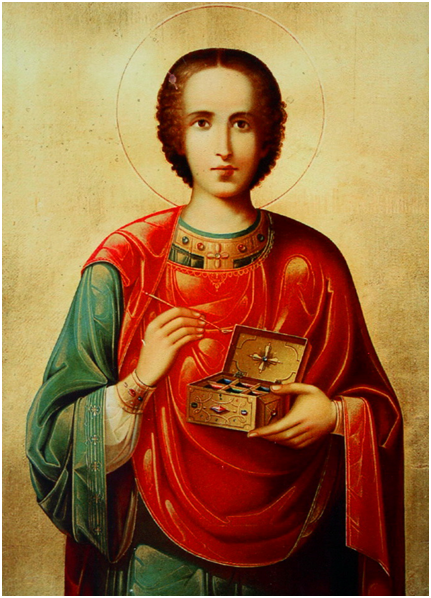
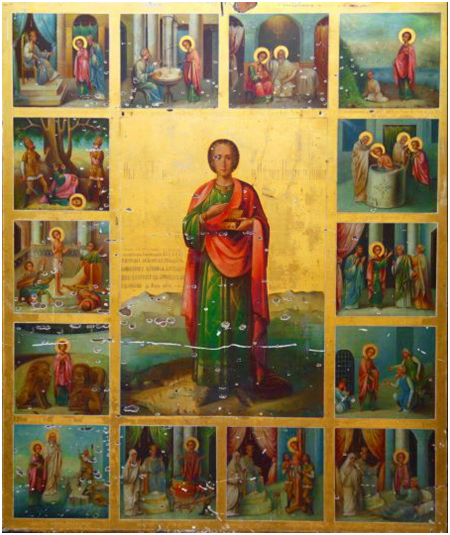

|

Святой великомученик и целитель Пантелеимон - один из самых почитаемых святых Православной Церкви: едва ли мы найдем храм, где не было бы иконы святого. Среди раннехристианских целителей это пресвятое имя занимает особое место.
С древнейших времен св. Пантелеимон считается покровителем врачей. Молитвы болящих, с верой обращенные к нему, приносят облегчение исцеляют от физических и духовных недугов.
Память святого празднуется 9 августа н.ст.
Святой великомученик и целитель Пантелеимон родился в Вифинии (Малая Азия) в городе Никомидия в семье знатного язычника Евсторгия и был назван Пантолеоном (что значит «по всему лев»), так как родители желали видеть его мужественным и бесстрашным юношей. Мать, святая Еввула (память 30 марта), воспитывала мальчика в христианской вере, но рано окончила свою земную жизнь. Тогда отец отдал Пантолеона в языческую школу, а затем обучал его медицинс-кому искусству у знаменитого в Никомидии врача Евфросина. Отличаясь красноречием, хорошим поведением и необыкновенной красотой, юный Пантолеон был представлен императору Максимиану (284—305), который захотел оставить его придворным врачом.
В это время в Никомидии тайно проживали священномученики пресвитеры Ермолай, Ермипп и Ермократ, уцелевшие после сожжения 20 тысяч христиан (память 28 декабря) в Никомидийской церкви в 303 году и страданий священномученика Анфима (память 3 сентября). Из окна уединенного домика святой Ермолай неоднократно видел благообразного юношу и прозорливо провидел в нем избранный сосуд благодати Божией. Однажды пресвитер позвал Пантолеона к себе и начал с ним беседу, во время которой изложил ему основные истины христианской веры. С этих пор Пантолеон стал ежедневно заходить к священномученику Ермолаю и с наслаждением слушал то, что открывал ему Божий служитель о Сладчайшем Иисусе Христе.
Однажды, возвращаясь от учителя, юноша увидел лежавшего на дороге мертвого ребенка, укушенного ехидной, которая извивалась тут же рядом. Исполнившись сострадания и жалости, Пантолеон стал просить Господа о воскрешении умершего и умерщвлении ядовитого гада. Он твердо решил, что в случае исполнения его молитвы станет христианином и примет святое Крещение. И по действию Божествен-ной благодати ребенок ожил, а ехидна разлетелась на куски на глазах удивленногоПантолеона.
После этого чуда святой Ермолай крестил юношу во имя Отца и Сына и Святаго Духа. Семь дней провел новокрещенный у своего духоносного учителя, впитывая в свое сердце богооткровенные истины святого Евангелия. Став христианином, Пантолеон часто беседовал со своим отцом, раскрывая ему лживость язычества и постепенно подготавливая к принятию христианства. В это время Пантолеон уже был известен как хороший врач, поэтому к нему привели слепого, которого никто другой не мог исцелить. «Свет глазам твоим возвратит Отец света. Бог истинный, — сказал ему святой, — во имя Господа моего Иисуса Христа, просвещающего слепых, прозри!» Слепец тотчас же прозрел, а вместе с ним духовно прозрел и отец святого — Евсторгий, и оба с радостью приняли святое Крещение.
После смерти отца святой Пантолеон посвятил свою жизнь страждущим, больным, убогим и нищим. Он безмездно лечил всех обращавшихся к нему, посещал в темницах узников и при этом исцелял страждущих не столько медицинскими средствами, сколько призыванием Господа Иисуса Христа. Это вызвало зависть, и врачи донесли императору, что святой Пантолеон христианин и лечит христианских узников.
Максимиан уговаривал святого опровергнуть донос и принести жертву идолам, но избранный страстотерпец Христов и благодатный врач исповедал себя христианином и на глазах императора исцелил расслабленного: «Во имя Господа Иисуса Христа, встань и будь здоров», — произнес святой Пантолеон, и больной тотчас выздоровел. ОжесточенныйМаксимиан приказал казнить исцеленного, а святого Пантолеона предал жесточайшим мукам. «Господи Иисусе Христе! Предстани мне в эту минуту, дай мне терпение, чтобы я до конца мог вынести мучение!» — молился святой и услышал голос: «Не бойся, Я с тобой». Господь явился ему «во образе пресвитера Ермолая» и укрепил перед страданиями. Великомученика Пантолеона повесили на дереве и рвали тело железными крюками, обжигали свечами, растягивали на колесе, бросали в кипящее олово, ввергали в море с камнем на шее. Однако во всех истязаниях мужественныйПантолеон оставался невредимым и с дерзновением обличал императора. Господь неод-нократно являлся святому и укреплял его. В это же время перед судом язычников предстали пресвитеры Ермолай, Ермипп и Ермократ. Они мужественно исповедали Сладчайшего Господа Иисуса и были обезглавлены (память 26 июля).
По повелению императора святого великомученика Пантолеона привели в цирк и бросили его на растерзание диким зверям. Но звери лизали его ноги и отталкивали друг друга, стараясь коснуться руки святого. Видя это, зрители поднялись с мест и стали кричать: «Велик Бог христианский! Да будет отпущен неповинный и праведный юноша!» Разъяренный Максимиан приказал воинам убить мечами всех, кто славил Господа Иисуса, и даже убить зверей, не тронувших святого мученика. Видя это, святой Пантолеон воскликнул: «Слава Тебе, Христе Боже, что не только люди, но и звери умирают за Тебя!»
Наконец, обезумевший от ярости Максимиан приказал отрубить великомученику Пантолеону голову. Воины привели святого на место казни и привязали к масличному дереву. Когда великомученик начал молиться Господу, один из воинов ударил его мечом, но меч стал мягким, как воск, и не нанес никакой раны. Пораженные чудом, воины закричали: «Велик Бог христианский!» В это время Господь еще раз открылся святому, назвав его Пантелеимоном (что значит «многомилостивый») вместо прежнего имени Пантолеон, за его великое милосердие и сострадательность. Услышав Голос с Неба, воины упали на колени перед мучеником и просили прощения. Палачи отказались продолжать казнь, но великомученик Пантелеимон повелел выполнить приказ императора. Тогда воины со слезами простились с великомучеником, целуя его руку. Когда мученику отсекли голову, то из раны вместе с кровью истекло и молоко, а маслина, к которой был привязан святой, в этот момент процвела и исполнилась целительных плодов. Видя это, много людей уверовало во Христа Иисуса. Тело святого Пантелеимона, брошенное в костер, осталось неповрежден-ным, и тогда Никомидийский страстотерпец был погребен христианами на близлежащей земле схоласта Адамантия.
Лаврентий, Вассой и Провиан, слуги великомученика, написали повествование о жизни, страданиях и кончине великомученика. Память святого Пантелеимона издревле чтится Православным Востоком. Уже в IV веке были воздвигнуты храмы во имя святого в Севастии Армянской и Константинополе. Кровь и молоко, истекшие при усечении святого, хранились до Х века и подавали верующим исцеления.
Честные мощи великомученика Пантелеимона частичками разошлись по всему христианскому миру. Особенно много их на Святой Горе Афон. Честная и многоцелебная глава его хранится в Русском Афонском Свято-Пантелеимоновом монастыре, в соборном храме, посвященном его имени.

В Соборном Храме Новоафонского монастыря с мая 2009 года находится Храмовая икона «Святой Целитель Пантелеймон. В житии». Свято-Пантелеймоновский монастырь (бывшая домашняя церковь Романовых) – один из самых больших действующих православных храмов Абхазии.
Храм Новоафонского монастыря воздвигнут в 1888 - 1900 годах по проекту архитектора Никонова в честь святого великомученика Пантелеймона-целителя. Первый камень в основание Храма собственноручно заложили российский император Александр III и императрица Мария Федоровна.
В мае 2009 года Благотворительный фонд Игоря Саввиди при содействии иерея Виссариона (Аплиа) организовал возвращение этой уникальной реликвии в Новоафонский монастырский комплекс. Храмовая икона была написана ко Дню коронации Николая II на Святой горе Афон в Русском Свято-Пантелеимоновском монастыре и передана в дар обители монастыря святого апостола Симона Кананита (Новый Афон, Абхазия) в 1896 году. В советское время икона была утеряна.
|